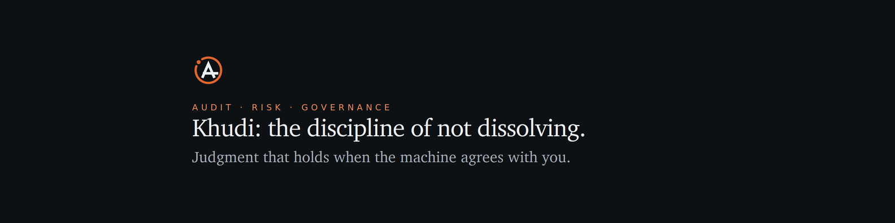

Every field below is one tap to copy. The vocabulary matches the resume, the site and GitHub on purpose, so all four reinforce each other when a recruiter searches.
1584 × 396. Laid out so nothing important sits under your profile photo or inside the crop LinkedIn takes on mobile.

Download dark ↓ Download light ↓The single highest-weighted field in recruiter search. Titles first, not a slogan, because recruiters search job titles.
AI Governance & Model Risk | Internal Audit Executive | Ex-OCC Bank Examiner | Citi, JPMorgan Chase | NIST AI RMF, SR 26-2, ISO 42001 | DBA researcher on AI and professional judgment
Only the first two lines show before "see more", so the hook goes there. Everything after that is for the recruiter who already clicked.
The most dangerous number in the room is the one nobody questions. I have spent twenty years on that problem from three seats: as a national bank examiner at the OCC, as an internal audit leader inside Citi and JPMorgan Chase, and now as a doctoral researcher studying what happens to professional judgment when the analysis arrives already formed. WHAT I DO I help regulated organizations adopt AI without losing the ability to challenge it. In practice that means AI governance frameworks mapped to the NIST AI RMF and federal model risk guidance (SR 26-2, which superseded SR 11-7 in April 2026), model inventory and validation, human-in-the-loop control design, third-party AI risk, and the documentation trail an examiner will actually ask for. WHAT I HAVE ACTUALLY DONE - Built and shipped a retrieval-augmented generation (RAG) assistant into a live audit function at Citi, cutting review cycle time roughly 35% - Authored an AI governance framework for an internal governance team covering model risk, explainability, and human oversight - Led consent-order remediation and issue-closure packages submitted to quality assurance review and external regulators - Ran the Resolution and Recovery Planning program at JPMorgan Chase, coordinating 50+ stakeholders on Federal Reserve and FDIC submissions - Owned Basel III RWA and capital adequacy reporting, identifying $180M in capital optimization - Examined banks for safety and soundness at the OCC and the Florida Office of Financial Regulation THE RESEARCH My doctoral work at Florida International University asks a narrow and uncomfortable question: when an AI system produces the analysis, does the reviewer still review it? Systems tuned on human approval tend to affirm the position you already hold, and they are most agreeable exactly where a reviewer most needs pushback. That is a control problem before it is a technology problem. WHAT I AM LOOKING FOR Director and Head-of level roles in AI governance, model risk, and internal audit. Also open to advisory engagements, guest lecturing, and research collaboration. Perseverance Commands Success. malikai-786.github.io
This text is indexed by recruiter search, so it carries the same keywords as the resume. Paste into the description box for each role.
Led global, risk-based thematic audits across 15+ business units, assessing operational resilience, change management, and regulatory alignment against OCC and Federal Reserve expectations. Drove consent-order remediation: prepared issue-closure packages and audited remediation items submitted to quality assurance review and external regulators, including work tied to legal-entity divestitures. Built and deployed a prompt-engineered RAG document assistant for audit and workpaper inquiry, reducing review cycle time an estimated 35%. Applied AI shipped into a regulated control environment. Authored an AI governance framework for the internal governance team referencing the NIST AI RMF and federal model risk guidance, addressing model risk, explainability, documentation standards, and human-in-the-loop oversight. Delivered executive risk reporting to senior leadership and the Board Audit Committee. Mentored 8+ auditors on responsible AI adoption and automation-bias awareness.
Led the firm's Resolution and Recovery Planning (RRP) program, coordinating 50+ stakeholders across Legal, Treasury, and Operations on regulatory submissions to the Federal Reserve and FDIC. Supported Treasury and CIO capital controls and reconciliation reporting. Built automated reconciliation dashboards that cut manual review time approximately 40%.
Owned Basel III RWA calculation and capital adequacy reporting. Identified $180M in capital optimization opportunities and modeled capital impacts for CFO decision support.
Conducted safety-and-soundness examinations evaluating credit, liquidity, and operational risk. Contributed to enforcement actions and remediation monitoring.
Owner-operator of a multi-property residential portfolio. Direct accountability for P&L, capital allocation, leasing, vendor management, and reporting.
LinkedIn allows 50. The top three pinned carry disproportionate weight in search, so pin the three in ember first, then add the rest in this order.
Featured sits high on the profile and is the only place a recruiter can see proof rather than claims. Add these four links.
https://proofoverpromise.substack.com/ (Proof Over Promise, the newsletter) https://malikai-786.github.io/ (Research, advisory practice, and the story) https://malikai-786.github.io/brand.html (The identity system) https://github.com/MalikAI-786 (Public work) Resume PDF (upload the file directly)
Director of AI Governance Head of Model Risk Chief Audit Executive AI Risk Director Responsible AI Lead Director, Internal Audit Model Risk Management Director AI Governance Lead
{kind=link}
{kind=link}